Ultimos procesadores
Mejores procesadores de Intel
El mejor procesador Intel
Intel Core i5-12600K
El Core i5-12600K es el mejor procesador que puedes comprar ahora mismo. No es sólo de Intel o para juegos, sino el mejor en general. Viene con 10 núcleos por unos $300 dólares, con seis núcleos de rendimiento y cuatro de eficiencia.
Los núcleos de rendimiento se utilizan en los juegos, mientras que los núcleos de eficiencia adicionales proporcionan un ancho de banda extra para las cargas de trabajo más exigentes.
Las mejoras de un solo núcleo con los procesadores de 12ª generación de Intel brillan con el Core i5-12600K. En los juegos, puede superar incluso al Ryzen 9 5950X en algunos casos, y ese procesador es casi tres veces más caro.
En general, se las arregla para encabezar las listas de juegos, sólo en segundo lugar, tras los procesadores más caros de la línea de 12ª generación de Intel. También se beneficia de la arquitectura híbrida de 12ª generación.
Esta clase de procesador suele ser la mejor para los juegos puros. Para jugar y hacer streaming, solemos recomendar subir un escalón. No es el caso del Core i5-12600K. Los 10 núcleos proporcionan mucho ancho de banda para juegos y streaming, algo que rara vez vemos en un chip de $300 dólares.
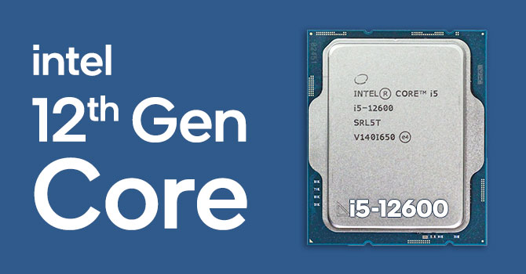
Click a la imagen para saber más sobre este procesador
Intel Core i5-11600K
La plataforma Rocket Lake de 11ª generación de Intel no es perfecta, por lo que la mayoría de nuestras recomendaciones se centran en la generación anterior. Sin embargo, para juegos, el i5-11600K es una excepción.
Es un poco más caro que el 10600K, aunque viene con los mismos seis núcleos y 12 subprocesos. Reduce la velocidad del reloj base de 4.1 GHz a 3.9 GHz, pero cuenta con una velocidad de reloj de impulso más alta a 4.9 GHz.
También tiene mejores gráficos integrados, pero si quieres obtener las mejores imágenes, debes emparejarlo con una GPU dedicada. Depende del juego, pero el 11600K mantiene una pequeña pero medible ventaja sobre el 10600K en la mayoría de los títulos.
Las mejoras de generación en generación son más claras en las tareas que no son de juego. El 11600K supera las ofertas de última generación de Intel y ofrece una competencia más creíble a los chips de gama media de AMD en tareas de productividad, aprovechando los aceleradores específicos de la aplicación con gran efecto.
Intel cobra por este rendimiento, sin embargo, no en dólares, sino en potencia. A pesar de una TDP anunciada de 125 W, el 11600K puede consumir muy por encima de 200 W bajo carga. Con más potencia y, por lo tanto, más calor, necesitas una fuente de alimentación, un enfriador y una placa base decentes para el 11600K.
Intel también está cambiando los sockets con su próximo lanzamiento de Alder Lake, por lo que necesitarás una nueva placa base si decides actualizar a los nuevos procesadores en un futuro no muy lejano.
Aun así, el 11600K es un gran procesador de juegos. Viene con suficiente energía para jugar mientras ofrece una potencia decente para tareas de productividad, y esa combinación es difícil de encontrar por debajo de $300 dólares. Dicho esto, el 10600K alcanza la mayor parte del camino, así que considéralo como una alternativa si no puedes encontrar un 11600K en stock.
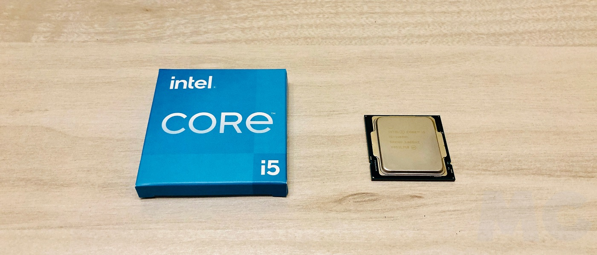
Click a la imagen para saber más sobre este procesador
Intel Core i5-10400F
A pesar de no lucir la etiqueta Core i3, el 10400F es uno de los procesadores más baratos de Intel. Tiene un valor increíble de alrededor de $150 dólares, empaquetado con seis núcleos y 12 subprocesos, un reloj base de 2.9 GHz y un reloj de impulso de 4.3 GHz.
Es alrededor de $80 dólares más barato que el 10600K y tiene especificaciones similares. La mayor diferencia es el sufijo “F”, lo que significa que el 10400F requiere gráficos discretos. Incluso con el bajo precio, el 10400F funciona bien.
En tareas como el renderizado, el 10400F es capaz de igualar al 9700K mientras supera los chips Ryzen 3000 de presupuesto de AMD.
Aunque el 10400F tiene poca potencia para la mayoría de las cargas de trabajo intensivas de procesador, sigue siendo una gran opción de Intel para la navegación web, la edición ligera de imágenes y las aplicaciones de oficina.
Si eres un jugador, el 10400F es una opción aún mejor. Con muchos núcleos y un reloj de impulso sólido, puede avergonzar a los procesadores de tres veces su precio. Si lo emparejas con una buena tarjeta gráfica, puedes lograr un rendimiento de juego a la par con un i7 y, a veces, incluso con un i9.
El 10400F marca un punto óptimo en el rango de Intel. Por debajo, el rendimiento cae significativamente sin muchos ahorros de costos, y por encima de él, la escala de precios es más rápida que el desempeño. Es un procesador para todos los días con suficiente potencia para juegos y productividad ligeros.
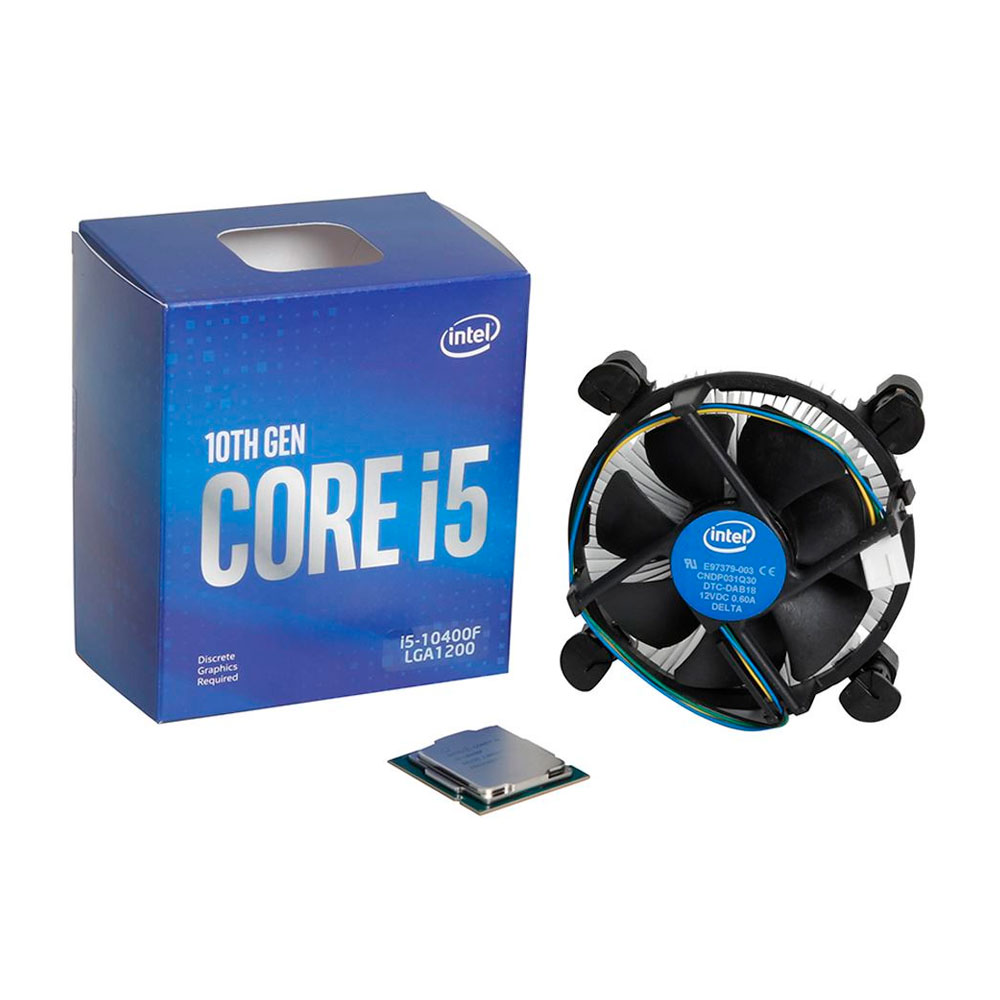
Click a la imagen para saber más sobre este procesador
Intel Core i9-12900K
Los procesadores insignia de Intel no han sido impresionantes en las últimas dos generaciones, pero el Core i9-12900K cambia eso.
Las pruebas muestran que el Core i9-12900K puede superar al competidor Ryzen 9 5950X de AMD hasta en un 30 por ciento en algunos casos.
Es el procesador insignia de los procesadores insignia, con 16 núcleos y velocidades de refuerzo de un solo núcleo de hasta 5.2 GHz. Supera a todos en el mercado, lo que lo convierte en una gran opción para los juegos, la creación de contenidos, y todo lo demás.
Debes de tener en cuenta que el Ryzen 9 5950X es entre $100 y $200 dólares más caro. Lleva una sólida ventaja en los juegos, pero el Core i9-12900K realmente brilla en las cargas de trabajo de creación de contenidos, donde es mucho más rápido que la competencia.
Tiene un gran consumo de energía, pero la mayoría de los chips de Intel lo tienen hoy en día. El Core i9-12900K es una clara muestra de la arquitectura híbrida de Alder Lake y de lo que puede hacer por las computadoras, ofreciendo un elevado número de núcleos y un gran ancho de banda para la multitarea.
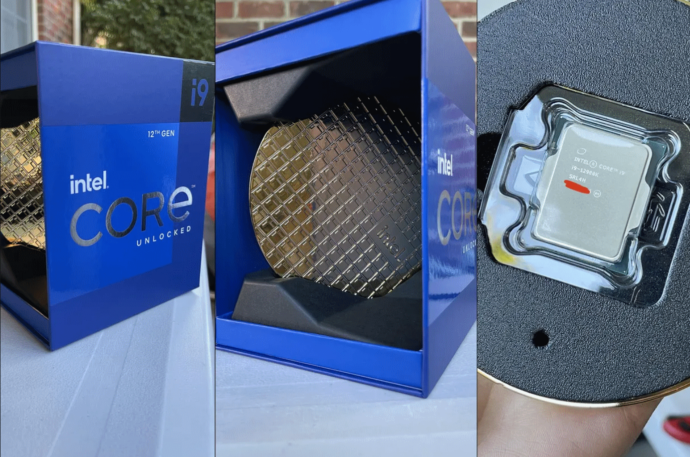
Click a la imagen para saber más sobre este procesador
Intel Core i7-11375H
Aunque un nuevo procesador de escritorio Intel puede tener algunos problemas, los procesadores móviles de Tiger Lake son excelentes. Para un gran equilibrio de rendimiento y potencia, recomendamos el i7-11375H.
Viene con cuatro núcleos y ocho subprocesos, un reloj base de 3.3 GHz y un asombroso reloj de impulso de 5 GHz, todo mientras mantiene las demandas de energía por debajo de los 35 W.
El i7-11375H lidera los nuevos procesadores Tiger Lake H35 de Intel, que apuntan a las laptops para juegos con pantallas de 14 pulgadas. Este procesador aparece en portátiles como la Stealth 15M de MSI, pero muchos fabricantes siguen enviando equipos con chips de la generación anterior.
A pesar de tener especificaciones similares, el i7-11375H supera incluso a los mejores chips de Tiger Lake con su presupuesto de energía extendido. Eso se traduce en algunas mejoras en el rendimiento de un solo núcleo.
Sin embargo, con la misma arquitectura subyacente, debería esperar un mayor beneficio de rendimiento en tareas multiproceso. Pero, es difícil decir algo definitivo sobre un procesador móvil.
Una selección incorrecta hace que incluso, los mejores procesadores parezcan débiles, y una configuración decente puede hacer brillar a los chips con poca potencia. El i7-11375H es sin duda, el procesador Intel móvil más potente disponible, pero es importante consultar reseñas individuales de portátiles.
Si estás buscando más potencia bruta, Intel también ofrece el Core i9-11980HK en laptops premium para juegos. Viene con ocho núcleos y 16 subprocesos y una velocidad turbo de 5 GHz, por lo que es ciertamente más rápido que el i7-11375H. Sin embargo, aparece principalmente en máquinas de juego de alta gama, por lo que no es para todos.
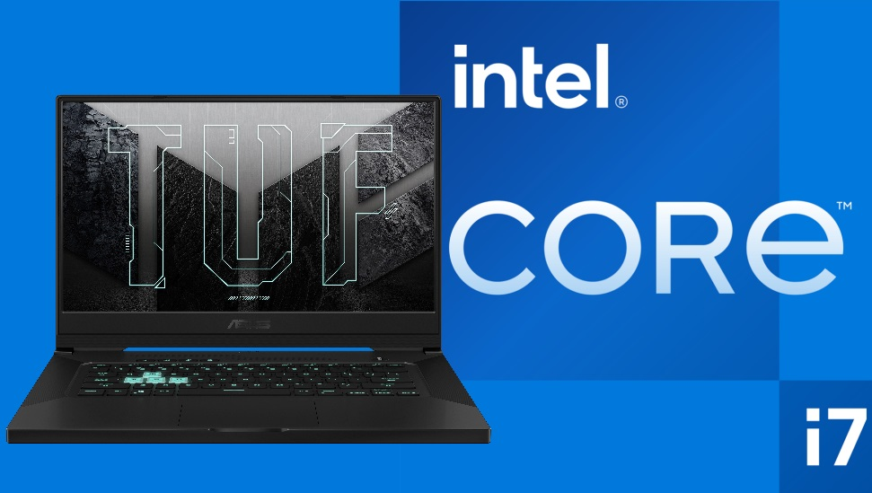
Click a la imagen para saber más sobre este procesador
----------------------------------------------------------------------------------------------------------------------------------------------
Mejores procesadores AMD
AMD Ryzen 5 3600
El chip AMD Ryzen 5 3600 destaca por su magnífica relación calidad-precio. Con él puedes jugar a cualquier juego con un gran rendimiento. Posee 6 núcleos a 3,6/4,2 GHz (gigahercios) y tecnología multihilo, por lo que puede operar con 12 hilos. Además, presenta un IPC (instrucciones por ciclo) muy alto.
Se trata de un chip fabricado en base a la arquitectura Zen2 con litografía de 7 nm (nanómetros) FinFET. Viene con un disipador Wraith Stealth.
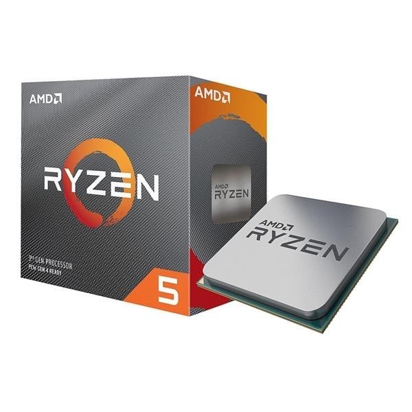
Click a la imagen para saber más sobre este procesador
AMD Ryzen 7 2700X
Un procesador muy potente, perfecto para disfrutar al máximo de los juegos actuales con altas tasas de fotogramas y para tareas de edición. Cuenta con 8 núcleos y tecnología multihilo, por lo que dispone de 16 hilos de trabajo. Su frecuencia de base es de 3,7 GHz, llegando hasta 4,3 GHz en modo turbo.
Cuenta con un caché L3 de 16 MB (megabytes) y con disipador de calor Wraith Prism. Además, viene desbloqueado para que puedas realizar overclock.
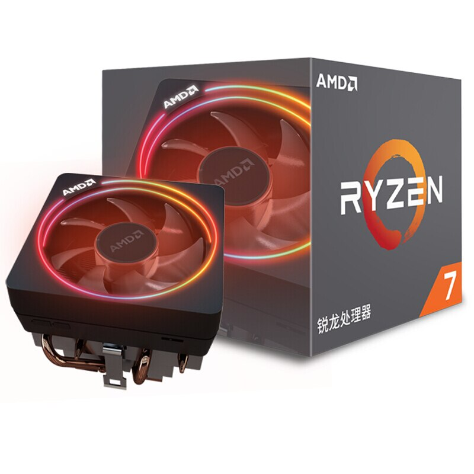
Click a la imagen para saber más sobre este procesador
AMD Ryzen 9 3900X
Un impresionante procesador con 12 núcleos y 24 hilos de trabajo, con una frecuencia base de 3,8 GHz y que llega en modo turbo hasta los 4,6 GHz. Fabricados a partir de la nueva arquitectura Zen2 y con una litografía de 7 nm, ofrecen un rendimiento y un IPC realmente alto. Cuentan con una memoria caché L3 de 64 MB.
Además, vienen con un ventilador Wraith Prism y tienen una potencia de diseño térmico de 105 W (vatios).
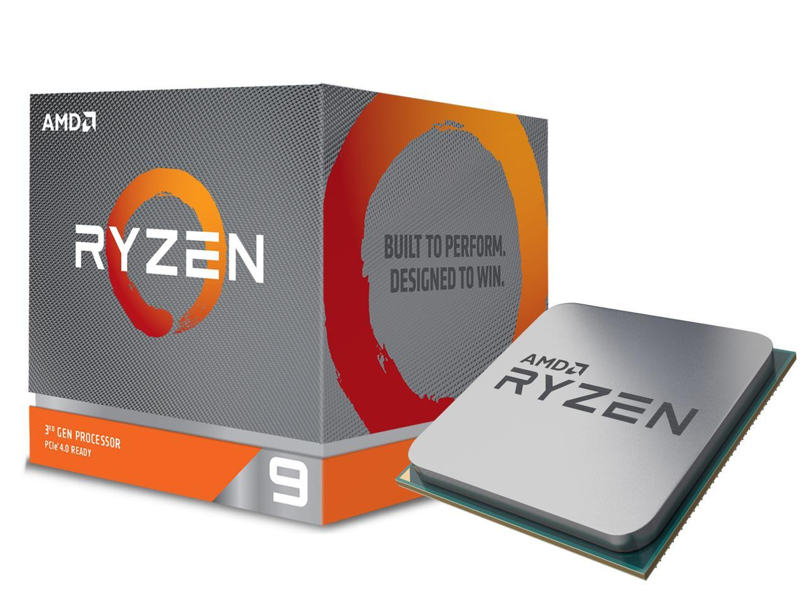
Click a la imagen para saber más sobre este procesador
AMD Ryzen 3 2200G
Un procesador con un precio realmente ajustado y con gráfica Radeon Vega integrada. Se trata de una de las mejores alternativas si quieres montar un equipo muy económico sin tener que comprar una tarjeta gráfica. Dispone de 4 núcleos a 3,5 GHz, que pueden llegar a 3,7 GHz en modo turbo.
Es compatible con las placas AMD socket AM4. Cuenta con 4 MB de memoria caché L3 y 2 MB de memoria L2. Y viene con un disipador de calor Wraith Stealth.
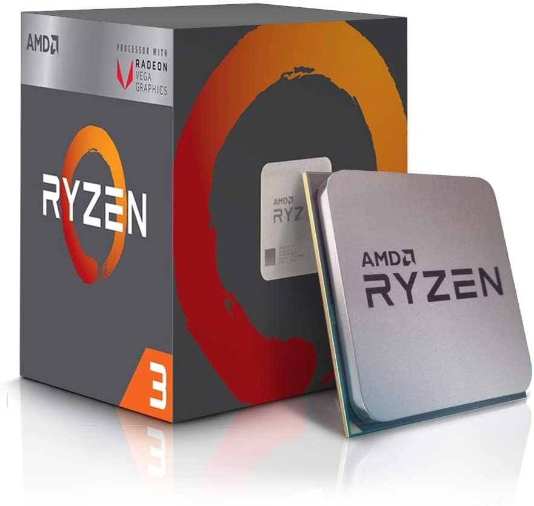
Click a la imagen para saber más sobre este procesador
Ryzen 9 5950X
El procesador Ryzen 9 5950X es el buque insignia de la nueva plataforma de procesamiento de AMD creada bajo Zen 3. Una arquitectura avanzada fabricada en procesos tecnológicos de 7 nm, que ha llegado con novedades en la unidad CCD, la memoria caché, el predictor de saltos o los motores de ejecución, para junto a otras optimizaciones lograr una mejora en rendimiento monohilo cercana al 20%.
AMD ha apostado por las versiones destinadas a motorizar ordenadores de sobremesa para el estreno de esta arquitectura. Se comercializarán como Ryzen 5000 y el modelo que nos ocupa es la estrella de la serie como la CPU para consumo de mayor rendimiento de la historia de la compañía.
Sus especificaciones conocidas ya apuntaban muy alto en rendimiento, con 16 núcleos y 32 hilos de procesamiento nativo, frecuencias de trabajo hasta 4,9 GHz y 72 Mbytes de caché de segundo y tercer nivel. Los resultados de las pruebas de rendimiento y comparativas que están llegando a Internet confirman las buenas sensaciones que nos dejó este chip en su presentación.
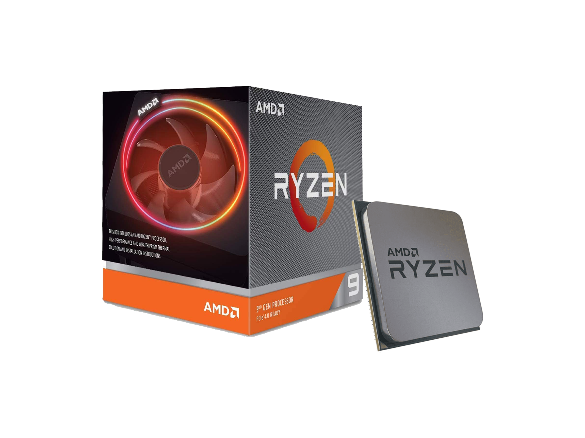
Click a la imagen para saber más sobre este procesador
Ryzen 5 5600x
Su estructura y diseño no ha variado en prácticamente nada respecto a la anterior generación, o al menos respecto al 3600XT. En la zona superior tenemos un amplio IHS de aluminio y cobre con una cubierta en gris que nos deja ver serigrafiado el modelo. Las dimensiones son exactamente las mismas que CPU precedentes, haciendo contacto con los dos DIE internos que contendrán los núcleos y el cIOD.
La PCB que actúa como sustrato contiene un total de 1331 contactos bañados en oro para mejorar la transferencia de energía con la placa. Efectivamente, en él se mantiene la interfaz de tipo PGA (Pin Grid Array) AM4, la cual lleva con nosotros ya bastantes generaciones. Gracias a esta nos aseguramos de tener compatibilidad al menos un año más con nuestra placa actual. Eso sí, deberán ser chipsets X570, B550 o A520, los tres que obtendrán compatibilidad asegurada con estas nuevas CPU.
Este AMD Ryzen 5 5600X continuará implementado la arquitectura basada en chiplets o unidades funcionales que tanta versatilidad le da a AMD. En este caso serán dos die los presentes en la CPU, el cIOD y un solo CCD con 6 núcleos físicos y 12 hilos de procesamiento. Recordemos que cada CCD tienen 8 núcleos en su interior, así que dos de ellos permanecen desactivados.
La frecuencia de trabajo el ganado en amplitud respecto al Ryzen 5 3600X de la anterior generación. Tenemos una frecuencia base de 3,7 GHz, -100 MHz respecto a la CPU Zen2, y una frecuencia boost de 4,6 GHz, +200 MHz de incremento. Esta frecuencia se alcanzará en un solo núcleo y en ráfagas, o al menos así debería de ser, pero durante el análisis este procesador alcanza los 4,65 GHz en todos los núcleos. Algo bastante sorprendente al superar sus propias especificaciones, y no hemos tocado nada en Ryzen Master ni la BIOS de la placa que utilizamos.
El 5600X es un 19% más potente que el 3600X en multi-core según R15, y del 15% según R20. En mono-core roza los 600 puntos en R20, un incremento de casi el 19% respecto al 3600XT, así que nuevamente se verifica este incremento de IPC marcado por el fabricante. Al i5-10600K en capacidad bruta simplemente le gana por goleada con casi un 24% en multi-core.
En rendimiento gráfico con 3DMark tenemos resultados que lo hacen superar incluso a un 9900K o un 10700K, y hasta procesadores como el 3800X de la anterior generación con DirectX 11. En el resto de test se mantiene la tendencia, siendo un mejor procesador que cualquier otro de 6 núcleos disponible en el mercado.
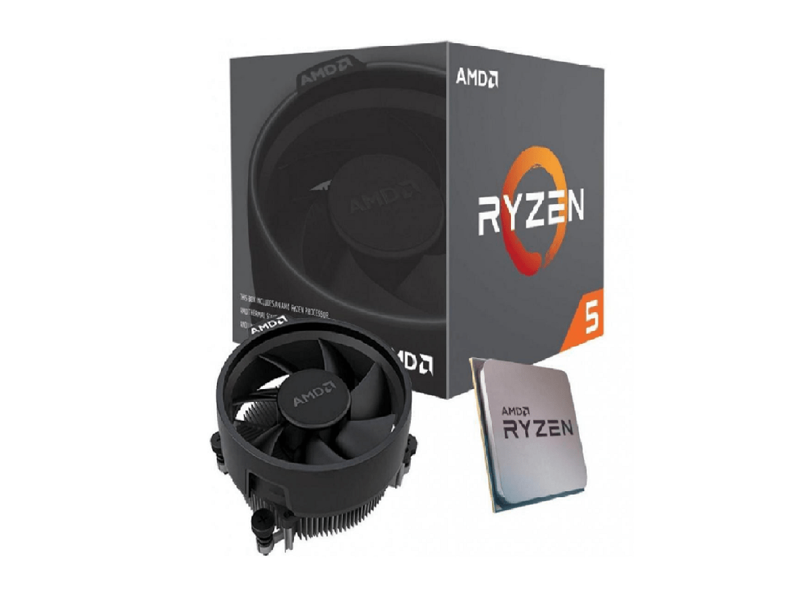
Click a la imagen para saber más sobre este procesador
----------------------------------------------------------------------------------------------------------------------------------------------
Lo más nuevo por parte de Intel
Intel Core de 12ª generación con arquitectura Alder Lake
Intel va a colocar en el mercado tres series diferentes de chips con microarquitectura Alder Lake para ordenadores portátiles: la H, la P y la U. Los procesadores de la serie H tienen un TDP (potencia de diseño térmico) de 45 vatios y están diseñados para ser integrados en equipos de alto rendimiento para entusiastas.
Los de la serie P tienen un TDP de 28 vatios y están dimensionados para los portátiles en los que debe prevalecer un diseño estilizado y la máxima ligereza posible. Y, por último, los procesadores de la serie U tienen un TDP de 15 o 9 vatios, y son los chips que aspiran a ser integrados en los equipos portátiles más compactos en los que es asumible sacrificar un poco de potencia con el propósito de favorecer la portabilidad y maximizar la autonomía.
El auténtico director de orquesta de estos microprocesadores es Intel Thread Director, un componente que combina hardware y software con un rol fundamental: decidir en tiempo de ejecución en qué núcleo debe procesarse cada hilo de ejecución (thread) dependiendo de sus características.
Una característica que juega a favor de los procesadores pertenecientes a la serie H es su capacidad de trabajar codo con codo con un abanico amplio de tecnologías de memoria. Y es que pueden convivir con módulos hasta DDR5-4800, DDR4-3200, LPDDR5-5200 y LPDDR4x-4267. No está nada mal.
En lo que se refiere a la conectividad estos procesadores implementan los estándares Wi-Fi 6E (Gig+) y Thunderbolt 4, así como HDMI 2.0b, eDP 1.4b y PCI Express 4.0. Es evidente que en esta generación de procesadores Intel ha hecho bien los deberes.
Por último, esta compañía ha anunciado que durante las próximas semanas llegarán a las tiendas los primeros ordenadores portátiles de alto rendimiento y ultraligeros equipados con los nuevos chips Intel Core de 12ª generación. Acer, Dell, Gigabyte, HP, Lenovo, MSI, Razer y ASUS son algunas de las marcas que han apostado por estos microprocesadores.
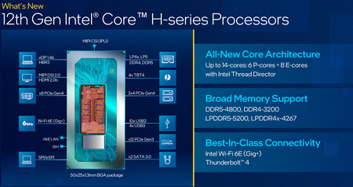
Click a la imagen para saber más sobre este procesador
Lo más nuevo por parte de AMD
Los AMD Ryzen 7000 con Zen 4
La compañía acaba de presentar sus nuevos procesadores de sobremesa Ryzen 7000, que serán los primeros en incorporar la nueva arquitectura Zen 4 y que veremos en el mercado en otoño de 2022.
Tal y como estaba previsto, los Ryzen 7000 superarán la barrera de los 5 GHz, tal y como estaba previsto, y estarán desarrollados con un proceso de cinco nanómetros. Un avance significativo, sin duda, pero que tendrá implicaciones a la hora de integrarlos en nuestro ordenador, entre ellas la necesidad de cambiar de socket y, por lo tanto, de placa base.
AMD no ha desvelado el portafolio de procesadores que formarán parte de la familia Ryzen 7000. Lo que sí sabemos es que estarán basados en Zen 4, la nueva arquitectura de AMD de cinco nanómetros. Según ha detallado AMD, los nuevos procesadores duplicarán la cantidad de caché L2 por núcleo y contarán con velocidades de reloj más altas, ofreciendo "un aumento de más del 15% en el rendimiento de un solo subproceso en comparación con la generación anterior" y TDPs de hasta 170W.
Para demostrarlo, la empresa ha mostrado el rendimiento de un procesador de preproducción jugando a 'Ghostwire Tokyo' y, durante la prueba, dicho procesador ha alcanzado nada más y nada menos que una velocidad de 5,5 GHz, igualando así los 5,5 GHz (turbo) del Intel Core i9-12900KS. Por otro lado, AMD afirma que es "un 30% más rápido que un Intel Core i9-12900K en una carga de trabajo de renderizado multihilo de Blender". Pero las novedades no se quedan ahí. Los Ryzen 7000 contarán también con un nuevo chip E/S de seis nanómetros que incluye un motor gráfico basado en RDNA 2, una nueva arquitectura de bajo consumo heredada de los procesadores Ryzen móviles, soporte para DDR5 y PCI Express 5.0 y para hasta cuatro pantallas.
Estos nuevos procesadores vienen acompañados de una nueva plataforma / zócalo, AM5, sucesora de la longeva AM4. Este nuevo zócalo tiene un diseño LGA de 1.718 pines con soporte para TDPs de hasta 170W, memoria DDR5 de doble canal y alimentación SVI3. Dispone, además, de 24 carriles PCIe 5.0 y soporte para las gráficas actuales y futuras. La familia AM5 tendrá tres chipsets:
• X670 Extreme: mayor conectividad y capacidades de overclocking con soporte PCIe 5.0 para dos ranuras gráficas y una de almacenamiento.
• X670: soporta overclocking con soporte PCIe 5.0 en una ranura de almacenamiento con soporte gráfico opcional.
• B650: con soporte de almacenamiento PCIe 5.0.
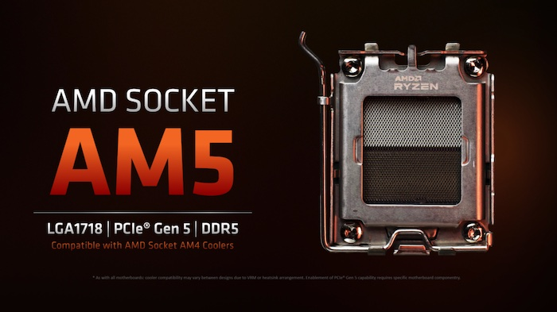
Click a la imagen para saber más sobre este procesador